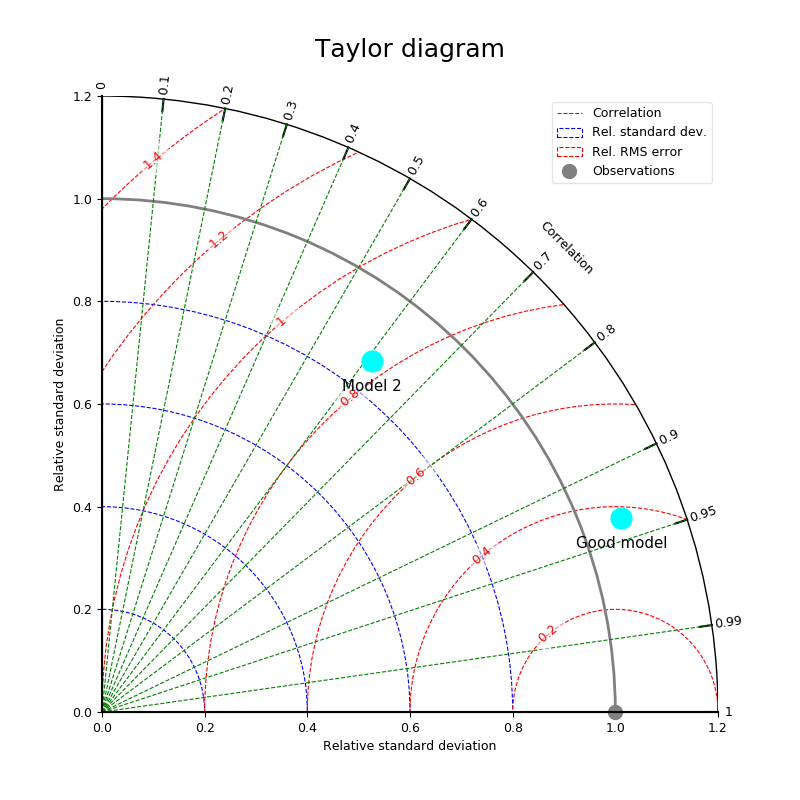

1.3.3.5.2.6. Diagramme de Taylor¶
Pour comprendre ce qu’est un diagramme de Taylor, se référer à cette page.
Voir : taylor().

On compare ici deux jeux de données (modèle) à une référence (observations) à l’aide d’un diagramme de Taylor.
# %% Make fake data
import MV2, numpy as N
nt = 50
# - reference
ref = MV2.sin(MV2.arange(nt, dtype='f'))*10.
# - modele 1
model1 = ref+N.random.rand(nt)*10.
model1.long_name = 'Model 1'
# - modele 2
model2 = ref/2.+N.random.rand(nt)*15.
model2.long_name = 'Model 2'
# %% Plot
from vacumm.misc.plot import taylor
taylor([model1, model2], ref, figsize=(8, 8), label_size='large', size=15,
labels = ['Good model', None], colors='cyan', title_size=18,
savefigs=__file__, savefigs_pdf=True, show=False, close=True)